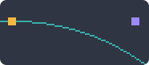
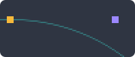
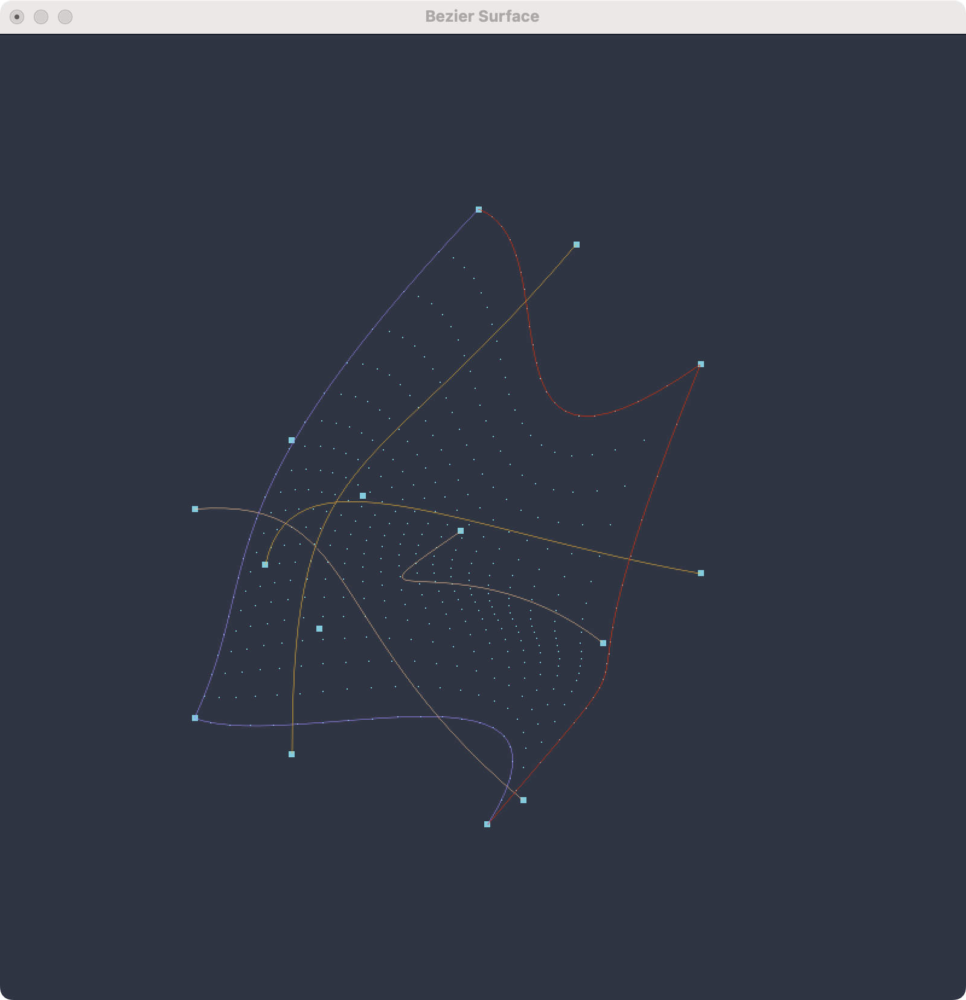

CG HW3
1. Bezier Curve
1.1 & 1.2
1.1
尝试解释以下代码：glBegin(GL_LINE_STRIP) for i in range(31): glEvalCoord1f(float(i) / 30) glEnd()并给出你认为
glEvalCoord1f的合理实现（简要描述）（2分）1.2
尝试不使用glEvalCoord1f 画出贝赛尔曲线（4分）
代码解释
（1.1.1）
在这段代码前，首先将 Bezier 曲线的控制点存入 controlPoints 数组中，然后调用 glMap1f 函数，将 controlPoints 数组中的点映加载到 GL_MAP1_VERTEX_3 类型的数据结构上，这样就可以通过 glEvalCoord1f 函数对曲线进行求值。
glMap1f(GL_MAP1_VERTEX_3, 0, 1, controlPoints)
glEnable(GL_MAP1_VERTEX_3)
在求值绘制的过程中：
glBegin(GL_LINE_STRIP)
for i in range(31):
glEvalCoord1f(float(i) / 30)
glEnd()
首先 glBegin(GL_LINE_STRIP) 表示开始绘制线段，glEnd() 表示结束绘制。
GL_LINE_STRIP 表示绘制一系列线段，每个线段的起点是前一个线段的终点。
glEvalCoord1f 表示对一维的参数曲线 进行求值，即给定一个 之间的参数 ，求出以对应的点 ，在 OpenGL 中，默认进行 Bezier 曲线的求值，（即多次线性插值）。
可以参考以下图片理解 Bezier 曲线的多次线性插值求值过程：
所以这段代码对曲线参数 从 到 进行了 次求值，然后将求值的点连接起来，绘制出了 Bezier 曲线。
glEvalCoord1f 的合理实现
简述（1.1.2）
glEvalCoord1f 的合理实现，应该是基于 Bezier 曲线的定义，即首先在各段曲线（n个点）对参数 进行插值，再对插值得到的 n-1 个点进行插值，不断重复以上过程，最后得到一个点，这个点就是 。
具体实现（1.2）
一方面，根据 Bezier 曲线的定义，可以通过递归线性插值的方法求出 ，即：
def evalCoord1f(self, controlPoints, t):
if len(controlPoints) == 1:
return controlPoints[0]
else:
return (1 - t) * self.evalCoord1f(controlPoints[:-1], t) + t * self.evalCoord1f(controlPoints[1:], t)
注意这里可能会多次求解同一个子问题，所以其实也可以通过动态规划的方法自底向上，或将子问题的解存储起来（记忆化）等方式，避免重复计算。
另一方面，也可以通过展开递归，得到 的显式表达式，即通过 Bernstein 多项式求出 ，即：
其中 表示 Bernstein 多项式， 表示控制点。
代码如下：
def bernstein(self, n, i, t):
return comb(n, i) * (t ** i) * ((1 - t) ** (n - i))
def evalCoord1f(self, controlPoints, t):
point = [0, 0, 0]
int n = len(controlPoints)
for i in range(n):
point[0] += self.bernstein(n - 1, i, t) * controlPoints[i][0]
point[1] += self.bernstein(n - 1, i, t) * controlPoints[i][1]
point[2] += self.bernstein(n - 1, i, t) * controlPoints[i][2]
return point
这里的 bernstein 函数是 Bernstein 多项式的实现，comb 函数是 scipy 库中的组合函数。为了追求速度，可以提前计算好组合数，加速运算。
然后我们仅需要将 glEvalCoord1f 函数替换为 evalCoord1f 函数，并手动画出这些点，就可以得到一个不使用 glEvalCoord1f 画出贝赛尔曲线的实现。
glBegin(GL_LINE_STRIP)
for i in range(31):
t = float(i) / 30
x, y, z = self.evalCoord1f(controlPoints, t)
glVertex3f(x, y, z)
glEnd()
理论上用上述的方法都能够根据输入的控制点数量，画出任意阶的 Bezier 曲线。
1.3
尝试利用 4 段 3 次 bezier 曲线画一个圆。（4分）
首先需要明确，Bezier 曲线是无法精确表示圆的，我们只能最小化误差，使得 Bezier 曲线尽可能接近圆。
首先我们根据前面的公式，展开得出三次 Bezier 曲线的显式表达式：
我们将圆分为四段，由对称性，我们只需要考虑其中一段：
由图，我们可以得到 ，，，。
又由圆的对称性，我们可以得到 。
带入，仅取 x 项，可得：
当 时，由对称性，此时点为弧线中点，若要求与圆重合，应该在四分之一圆弧的二分之一处，即
所以我们可以得到：
可以解得
但是此时我们的结果是在限制起点、中点和终点与圆重合的情况下得到的，即整个圆在每 处都与 Bezier 曲线重合。但实际上，此时的误差在 之间，虽然可以接受，但都为正。
一个真正的“最接近”的圆，应该是误差均匀分布在正负两侧的。其实实际上，通过与半圆的表达式 作差，积分求期望误差最小，我们可以得到，在曲线与圆每 处重合时，平均误差最小，此时 。
所以按照这个值放置控制点，就可以得到一个用 Bezier 曲线近似的圆。
抗锯齿
关于贝塞尔曲线的抗锯齿，请给出你认为合理的实现（包括但不限于调用 OpenGL 接口/其他手段）（2分）
有多种方式实现 Bezier 曲线的抗锯齿：
- 前期曲线生成
- 通过增加
Bezier曲线的阶数，使得曲线更加光滑，从而减少由于阶数不足导致的锯齿。 - 多段三阶以上
Bezier曲线的连接处，可以通过使得前后两端的切线相同，即前后控制点位于一条直线上，从而使得曲线更加光滑，从而减少由于连接处不光滑（不可导）导致的锯齿。
- 通过增加
- 中期曲线求值
- 通过增加采样，即增加
glEvalCoord1f的调用时的分段数，使得曲线更加光滑，从而减少由于求值采样不足导致的多段直线连接的锯齿。
- 通过增加采样，即增加
- 后期渲染
- 对于栅格化，可以通过增加像素点的采样，使得曲线更加光滑，从而减少锯齿，比如可以使用
glEnbale(GL_MULTISAMPLE)开启多重采样，以减少由于像素点采样不足导致的锯齿。 - 渲染时，对于
GL_LINE_STRIP可以通过调用glEnable(GL_LINE_SMOOTH)，使得线段更加光滑，从而减少锯齿。glHint(GL_LINE_SMOOTH_HINT, GL_NICEST)可以设置线段光滑的优先级，GL_NICEST 表示优先级最高，GL_FASTEST 表示优先级最低。 - 同时，也可以通过
glEnable(GL_BLEND)启用混合，并通过glBlendFunc(GL_SRC_ALPHA, GL_ONE_MINUS_SRC_ALPHA)设置混合函数，使得线段更加光滑，从而减少锯齿。 - 经过测试，以上方法具体效果其实依赖于具体硬件接口对实现，不同平台可能表现不同。例如
glEnbale(GL_MULTISAMPLE)对曲线效果就很有限，而启用混合后，曲线效果就会好很多。
- 对于栅格化，可以通过增加像素点的采样，使得曲线更加光滑，从而减少锯齿，比如可以使用
以下是开启 AA 前后的对比：


当然，也可以通过其他方式实现 Bezier 曲线的抗锯齿，比如通过自定义着色器，对曲线进行抗锯齿，具体而言，可以在片段着色器中，对距离曲线中心一定距离进行指数衰减，从而使得曲线边缘更加光滑，减少锯齿。
例如，下面给出一个可行的实现方案：（时间原因并未实现）
uniform float uLineWidth;
uniform vec4 uColor;
uniform float uBlendFactor; // eg. 1.5...2.5, 混合因子
varying vec3 vLineCenter; // 从顶点着色器传入的曲线中心
void main(void){
vec4 color = uColor;
double d = length(vLineCenter - gl_FragCoord.xyz); // 计算片段到曲线中心的距离
double w = uLineWidth; // 曲线宽度
if (d>w)
color.w = 0; // 超出曲线宽度的部分，透明度为0
else
color.w *= pow(float((w-d)/w), uBlendFactor); // 距离曲线中心越远，透明度越低
gl_FragColor = color;
};
2. Bezier Surface
2.1 & 2.2
2.1 这段代码已经给出了贝塞尔曲面的光照效果，这部分曲面的生成主要由
glEvalMesh2(GL_FILL, 0, 20, 0, 20)完成，请给出你认为glEvalMesh2的实现（简要描述）（2分）
2.2 请你注释掉材质和光照效果并注释掉glEvalMesh2(GL_FILL, 0, 20, 0, 20)尝试不使用glEvalMesh2画出贝塞尔曲面（只画出贝塞尔曲面生成的控制点即可），并对其进行旋转从多方面观察（6分）
实现分析
在执行 glEvalMesh2(GL_FILL, 0, 20, 0, 20) 之前，首先需要调用 glMap2f 函数，将 controlPoints 数组中的点映射到 GL_MAP2_VERTEX_3 类型的数据结构上，生成评估器。并调用 glMapGrid2f 函数，设置评估后面评估需求的步长，生成评估网格（或者就叫求值网格，直译问题）。
glMap2f(GL_MAP2_VERTEX_3, 0, 1, 0, 1, controlPoints)
glMapGrid2f(20, 0.0, 1.0, 20, 0.0, 1.0)
glEnable(GL_MAP2_VERTEX_3)
然后，我们就可以调用 glEvalMesh2(GL_FILL, 0, 20, 0, 20) 函数，根据评估网格生成的 平面上的点，对 Bezier 曲面进行求值，然后根据 GL_FILL 模式，填充生成的曲面。
具体来说，glEvalMesh2 函数会对评估网格中的每一个点，根据 Bezier 曲面的定义，通过对各控制点进行多次线性插值（具体来讲可以先对u方向每条 Bezier 曲线进行插值，然后对插值结果的控制点组成的 v 方向的 Bezier 曲线进行插值，下面会详细给出），得到一个点。与此同时，还会同步对曲面的法向量等进行计算和插值，从而实现光照效果。在得到所有的点后，根据 GL_FILL 模式，填充生成的曲面，也可以使用 GL_LINE 模式或 GL_POINT 模式，分别绘制曲面的网格边界和顶点。
代码实现
下面我们只考虑评估 Bezier 曲面的点，不考虑光照效果，即不求出法向量，也不根据评估结果进行三角化或四边形化进行填充绘制。
和 Bezier 曲线类似，我们可以通过递归线性插值的方法求出 ，即：
# 递归求解 bezier 曲面
def evalCoord1f(self, controlPoints, t):
if len(controlPoints) == 1:
return controlPoints[0]
else:
return (1 - t) * self.evalCoord1f(controlPoints[:-1], t) + t * self.evalCoord1f(controlPoints[1:], t)
def evalCoord2f(self, controlPoints, u, v):
# First, compute intermediate points for each row
intermediatePoints = []
for row in controlPoints:
point = self.evalCoord1f(row, u)
intermediatePoints.append(point)
# Now, compute the final point using the intermediate points along v
return self.evalCoord1f(intermediatePoints, v)
另一方面，也可以通过展开递归，得到 的显式表达式，即通过 Bernstein 多项式求出 ，即：
def bernstein(self, n, i, t):
return comb(n, i) * (t ** i) * ((1 - t) ** (n - i))
def evalCoord2f(self, controlPoints, u, v):
# First, compute intermediate points for each row
intermediatePoints = []
n = len(controlPoints[0])
m = len(controlPoints)
for row in controlPoints:
point = [0, 0, 0]
for i in range(n):
point[0] += self.bernstein(n - 1, i, u) * row[i][0]
point[1] += self.bernstein(n - 1, i, u) * row[i][1]
point[2] += self.bernstein(n - 1, i, u) * row[i][2]
intermediatePoints.append(point)
# Now, compute the final point using the intermediate points along v
point = [0, 0, 0]
for i in range(m):
point[0] += self.bernstein(m - 1, i, v) * intermediatePoints[i][0]
point[1] += self.bernstein(m - 1, i, v) * intermediatePoints[i][1]
point[2] += self.bernstein(m - 1, i, v) * intermediatePoints[i][2]
return point
最后，将 glMap2f、glMapGrid2f 和 glEvalMesh2 替换为以下手动评估并绘制点的代码，就可以得到一个不使用 glEvalMesh2 画出贝塞尔曲面（的评估结果点）的实现。
glBegin(GL_POINTS)
for i in range(21):
for j in range(21):
x, y, z = self.evalCoord2f(controlPoints, i/20.0, j/20.0)
glVertex3f(x, y, z)
glEnd()
当然，如果参照 Bezier 曲线的原始实现，我们也可以使用 glMap2f 和 glEvalCoord2f 不使用评估网格，手动对曲面按照自己的步长得出的评估点求值绘制。
glMap2f(GL_MAP2_VERTEX_3, 0, 1, 0, 1, controlPoints)
glEnable(GL_MAP2_VERTEX_3)
glBegin(GL_POINTS)
for i in range(21):
for j in range(21):
glEvalCoord2f(i/20.0, j/20.0)
glEnd()
下面分别是 Bezier Surface 静态与动态的展示：


注意这里我同时也画出了构成曲面的控制点，以及这些点构成的 Bezier 曲线。方便观察。
代码中也尝试绘制横向纵向共 8 条曲线，但比较混乱：

比较直观的是，同 Bezier 曲线一样：曲线经过两端的控制点，曲面一定经过四周的控制点，且经过四周控制点生成的曲线。
3. 附
同时，为了多角度观察，我也重新实现了 Window 父类，添加了对鼠标事件回调函数，增加了对鼠标事件的监听，可以通过鼠标左键拖动来旋转视角，中键拖动来平移视角，右键拖动来缩放视角。
并且重写渲染过程，支持在初始化类时传入自定义的控制点/控制矩阵，从而可以在不修改代码的情况下，绘制不同的曲线/曲面。
与此同时，也可以在初始化类时指定投影模式，开启正交投影或透视投影。
详情可见 main 函数示例。